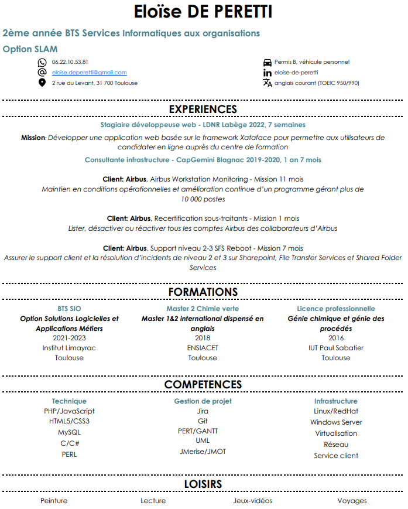
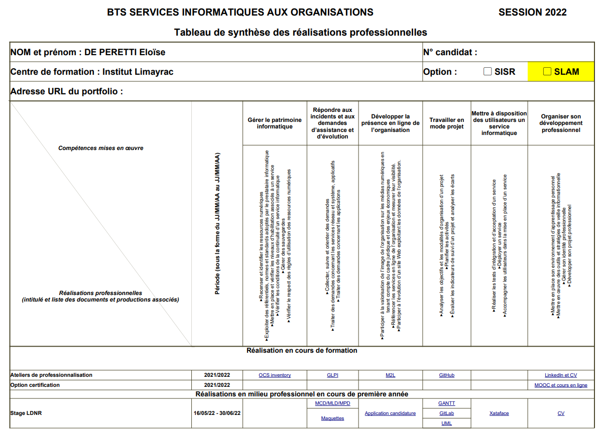

<!-- <?php
include "menu.php";
?> -->
<html>
<!Doctype HTML>
<head>
	<meta charset="utf-8">
	<link rel="stylesheet" type="text/css" href="formes.css">
	<script type="text/javascript" src="effets.js"></script>
	<title>PORTFOLIO Eloïse de PERETTI</title>
</head>
</html>

<!-- <nav><ul class="menu">
	<li>
		<a href="patrimoine.html">Gérer le patrimoine informatique</a>
	</li>
	<li>
		<a href="evolution.html">Répondre aux incidents et aux demandes d'assistance et d'évolution</a>
	</li>
	<li>
		<a href="ligne.html">Développer la présence en ligne de l'organisation</a>
		
	</li>
	<li>
		<a href="projet.html">Travailler en mode projet</a>
	</li>
	<li>
		<a href="service.html">Mettre à disposition des utilisateurs un service informatique</a>
	</li>
	<li>
		<a href="veille.html">Organiser son développement professionnel</a>
	</li>
</ul></nav> -->
<body>
<html>

	<h1>Bienvenue sur mon portfolio, celui-ci est en cours de création et d'amélioration</h1>
	<h2>Présentation succincte de mon parcours</h2>
	<p>
		Je suis actuellement étudiante en seconde année de BTS SIO option SLAM à l'institut Limayrac.<br>
		 C'est dans le cadre de ma reconversion professionnelle que mon choix s'est porté sur cette formation.<br>
		 Je possède initialement un master en chimie verte dont le but est d'appréhender les procédés industriels selon une approche plus respectueuse de l'environnement.<br> Cela passe par exemple la valorisation de déchets.
	</p>
	<h2><div class="survol_cv"><a href="Eloise_deperetti_CV.pdf">Curriculum Vitae<span></span></a></div></h2><br>
	<h2><div class="survol_ref"><a href="tab_synthese.pdf">Référentiel des compétences du BTS SIO<span></span></a></div></h2><br>
	<h2>Réalisations professionnelles</h2>
	<p>
		Ateliers de professionnalisation: activités effectuées en groupe dans le cadre de la première année de BTS SIO. Les ateliers peuvent être orientés SISR ou SLAM.<br>
		<li>
			OCS Inventory (Open Computer and Software Inventory) - SISR : réalisation d'inventaires des configurations matérielles des machines du réseau.
		</li>
		<li>
			GLPI (Gestionnaire Libre de Parc Informatique) - SISR : gestion des services informatiques et des services d'assistance.
		</li>
		<li>
			Projet M2L (Maison des Ligues de Lorraine) - SLAM : réalisation d'un site web pour la ligue d'escrime, à l'aide de HTML/CSS/PHP/JS.
		</li><br>	
	</p>
	<p>
		Stage chez LDNR (16/05/22 au 30/06/22): réalisation d'une application de candidature avec le framework Xataface.
	</p>
</body>

</html>